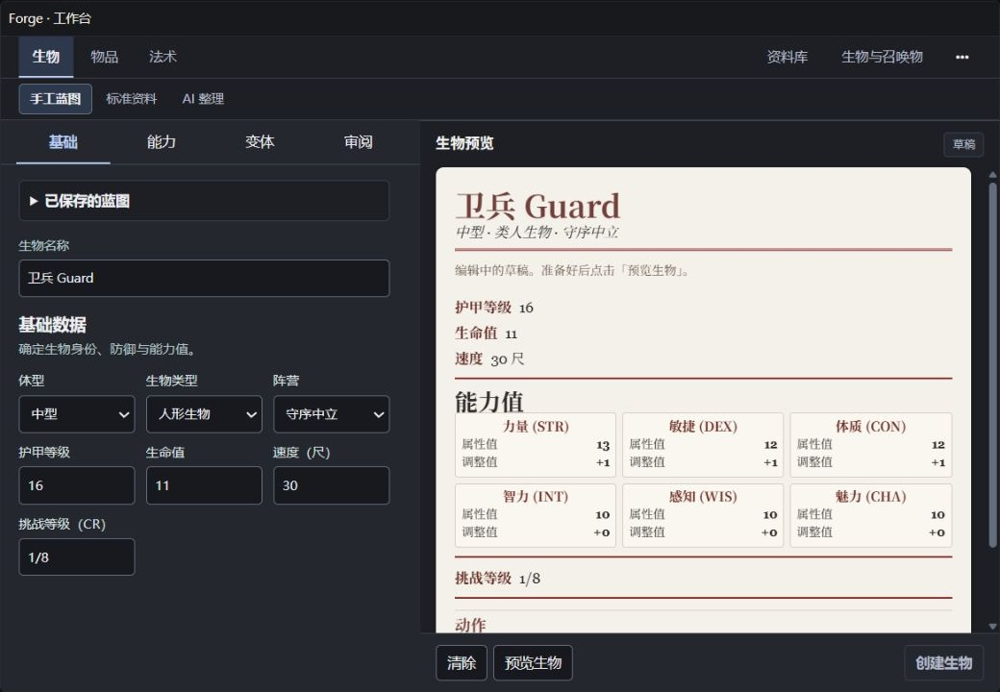
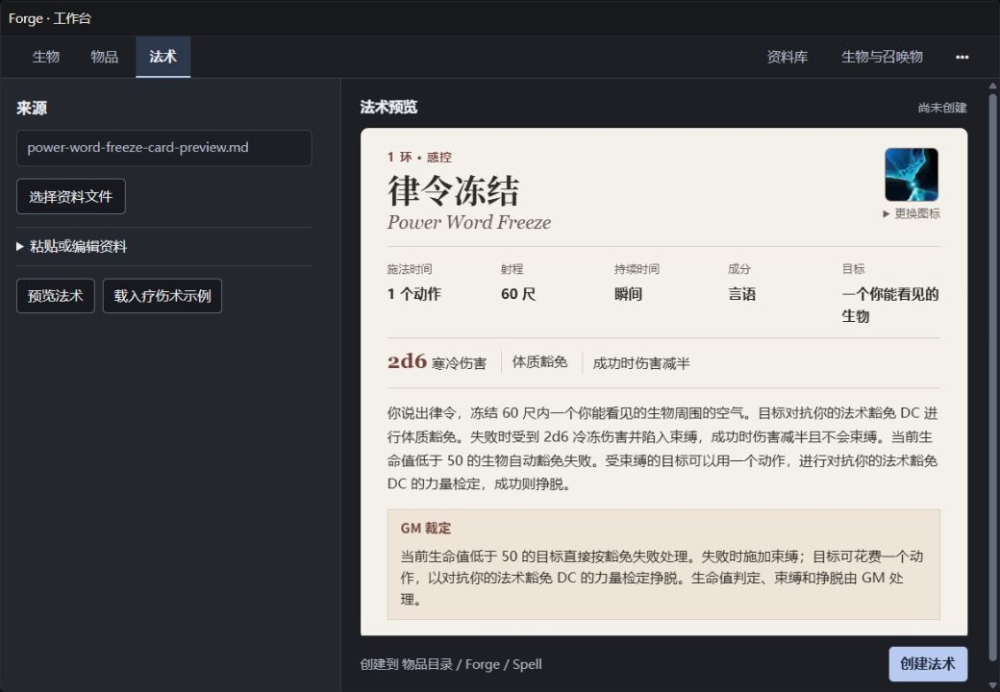
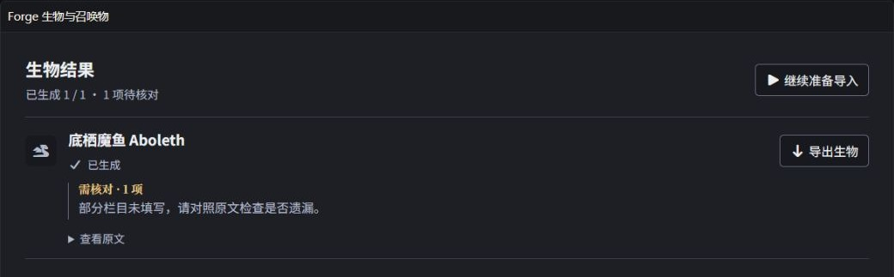
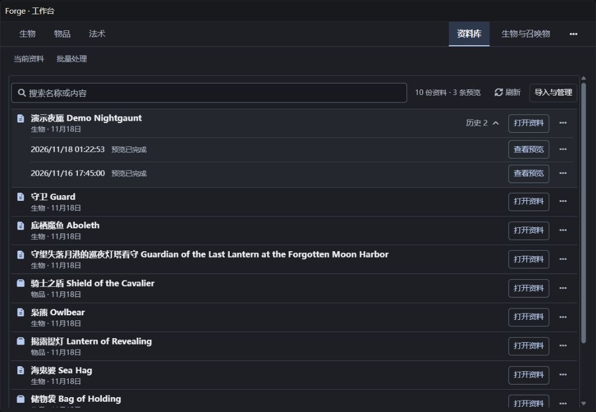

Forge 图解手册
从规则资料到可打开的生物、物品与法术卡。
准备来源 → 生成预览 → 对照核对 → 选择图片 → 确认创建 → 打开卡片
准备资料
在角色目录或物品目录打开同一个 Forge 工作台。顶部选择生物、物品或法术，再选需要的输入方式。
从哪里开始
| 我要做什么 | 选择入口 | 准备什么 |
|---|---|---|
| 自己填写生物 | 生物 → 手工蓝图 | 名称、属性、能力与动作 |
| 使用标准生物资料 | 生物 → 标准资料 | 标准 Markdown 资料 |
| 整理生物原文 | 生物 → AI 整理 | 完整原文，或有文字的 PDF |
| 制作物品 | 物品 → 标准资料 / AI 整理 | 标准资料，或完整规则描述 |
| 制作法术 | 法术 | 法术资料；也可先载入疗伤术示例 |
| 生物带有关联召唤物 | 生物与召唤物 | 本体及关联生物、物件的完整规则 |
把来源放完整
粘贴原文，或选择资料文件。保留规则引用、限制条件和关联生物的说明；只有名称或片段时，先补齐资料。
在 AI 整理中读取 PDF 时，填写要查找的生物或物品名称。PDF 需有可选中的文字；物品可补充物理页码，帮助定位。
手工蓝图和标准资料可以直接准备预览。使用 AI 整理前，检查连接设置中的服务和模型，再确认本次调用；AI 服务可能收费。
先选归档位置
从顶部的「工作台选项」打开「归档位置」，可选择已有目录。默认把角色放入 Forge、物品放入 Forge/Item、法术放入 Forge/Spell。
所选目录改名后会继续跟随；目录被删除时，创建前重新选择。


预览并核对
预览供 GM 对照来源。先看正文和具体数值，再决定是否创建。
生成当前资料的预览
- 在所选入口完成资料，点击预览或分析资料。AI 整理会显示本次请求进度。
- 查看生物、物品或法术的预览，并展开来源对照。多只生物按结果行逐个查看。
- 发现疑点时，阅读对应内容和提示。需要改来源就返回编辑，再生成新的预览。
对照这些内容
| 资料类型 | 核对重点 |
|---|---|
| 生物 | 名称、护甲、生命值、速度、属性、豁免、能力、动作与使用次数 |
| 物品 | 物品类型、伤害或治疗骰、使用方式、次数、充能与同调 |
| 法术 | 环阶、施法时间、射程、成分、持续时间、专注、豁免、伤害与升环 |
| 召唤物及配套控制 | 关联对象、数量、出现和移除条件，以及仍需 GM 处理的规则 |
按具体问题决定
检查提示不替代 GM 对规则的核对。中文名称、规则正文和数值都应与来源逐项对应。
已得到的生物结果可以查看和导出。某个成员或配套控制未完成，不会让其他已得到的生物结果消失；未完成的项目可按提示继续。


选图并创建卡片
核对内容、图片和归档位置后，再确认写入当前世界。
完成这几步
- 在预览中的图片区域选择合适图片，或使用自己的图片；确认图像与当前条目相符。
- 在卡片下方确认本次会放进哪个目录。需要更改时打开顶部工作台选项中的「归档位置」。
- 点击卡片下方的创建按钮。生物、物品和法术会按各自的结果显示创建情况。
- 创建后打开卡片，核对名称、正文和实际保存的配置。需要继续处理的内容会留在结果旁。
生物与召唤物逐个处理
按生物结果行查看每个对象，使用该行提供的打开、导出或继续操作。已创建的角色会保留，不因其他成员失败被丢弃。
已有结果可先导出保存；尚未完成的对象需明确继续。不要因为某一项未完成，就重复创建其他已经完成的生物。
配套控制另行确认
创建卡片与启用配套控制是两次选择。导入生物不会自动执行配套控制；先阅读控制内容、适用对象和需要 GM 处理的规则，再决定是否启用。
若创建后仍有提示，先打开已创建的卡片并对照来源，再按具体项目处理。


保存资料与继续处理
当前资料用来做眼前这件事；资料库用来留存和找回；批量处理用来安排多份资料。
切换三个视图
| 视图 | 用它做什么 |
|---|---|
| 当前资料 | 编辑来源、查看这次结果、核对并创建卡片 |
| 资料库 | 保存当前资料、搜索并打开旧资料；在工具中导入或导出 |
| 批量处理 | 读取多份资料，查看每项进度，明确开始或继续处理 |
留存和找回
- 需要稍后处理时，把当前资料保存到资料库。记录中的来源和结果分别查看。
- 在资料库按名称或内容搜索。找到对应条目后直接点「打开资料」，或点「历史」展开并查看这份资料的预览记录。
- 资料保存在当前浏览器，并按世界和 GM 分开。换设备前，从资料库工具导出，再到目标浏览器导入。
- 批量处理关页或刷新后会暂停。回来后查看队列，再明确开始或继续；创建前仍需核对每份结果。
下载练习资料
本手册附海鬼婆原文、生物导入文件，以及两只练习生物的原文和导入文件。可先下载阅读，再通过「生物与召唤物」预览导入文件。
这些资料用于练习流程。采用前仍须对照原文核对内容、图片与配套控制；打开手册或下载文件不会创建卡片。

